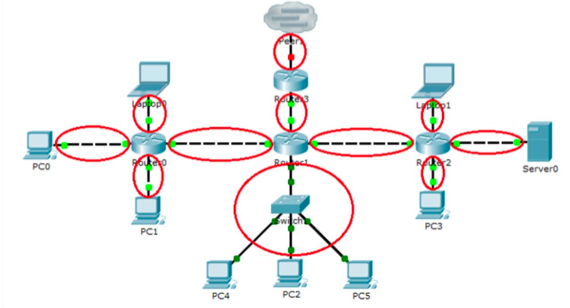
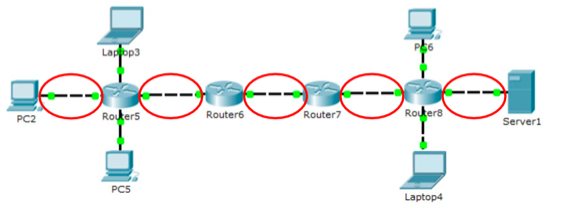
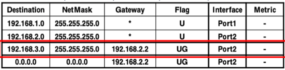

충남대학교 컴퓨터공학과 김상하 교수님의 "컴퓨터 네트워크" 강의를 필기한 내용입니다.
다소 잘못된 내용과 구어적 표현 이 포함되어 있을 수 있습니다.
LAN
- 단순하게 생각하면 ARP Request Packet이 도달하는 범위
- L2 Switch나 Hub로 연결되어있는 경우에는 같은 LAN으로 보고 Router로 연결되어있는 경우에 다른 LAN으로 본다
- Router의 각 Interface는 각각 서로 다른 LAN에 연결되어 있다

- LAN의 갯수를 세라는 문제 동영이가 낼거같은데 위 그림처럼 Router의 Interface와 연결되어있는 하나의 통신망을 세어주면 된다

- 그리고 Hop수를 세라는 문제도 낼거같은데 두 호스트 사이에 존재하는 LAN의 갯수를 세어 주면 된다
- 그리고 Routing table을 확인하는 숫자는 Interface를 지날때마다 확인하기 때문에 Hop count의 두배가 된댄다
Static Router
용어정리
- Static Router : Routing table을 사람이 직접 손수 적어줘야 하는 라우터
- Network Address : 해당 네트워크를 대표하는 IP 주소
- 이것은 네트워크상의 어떤 한 호스트랑 그 네트워크의 서브넷 마스크를 &해서 얻어낼 수 있음
- 그니까 예를 들면
- 192.168.3.1~192.168.3.255로 이루어진 네트워크가 있으면
- 당연히 Subnet mask는 /24가 되것지
- 그리고 이거랑 저중에 아무거나 하나 &하면 192.168.3.0 이 되잖여
- 저 값이 Network Address가 되는거임
- 즉, 어떤 IP가 속하는 Network의 Network Address를 알아내고 싶다면 그 IP랑 Subnet mask랑 &하면 된다이거야
- Destination, Destination IP : 이게 단어가 중복돼서 헷갈리는데 일단 여기서는 Destination은 라우팅 테이블에서 Subnet mask를 씌웠을때의 값을 말하는 거고 Destination IP는 패킷에 들어있던 수신지 주소 라고 용어 통일을 해야겠음
Routing table

- Destination : NetMask와 Bitwise AND를 해서 나와야 되는 결과값
- 보통은 Network Address가 들어가는데
- 근데 Host Address를 주는것도 가능하댄다 - NetMask를 /32를 줘서 특정한 하나의 Destination IP가 들어왔을때만 매칭시키는 것도 가능하댄다
- NetMask : 뭔지알제? 서브넷 마스크
- Gateway : Destination IP가 다른 네트워크에 있을 경우 거기로 가기 위한 다음 라우터의 IP주소
- ppt예시에는 ㅂㅅ같이 나와있는데 호스트가 자신과 직접 연결되어있을 경우에는 “*”로 표시해놓으면 된다
- Flag : 여러 flag들이 있는데
- U : UP - 다음 목적지(Hop - 뭐 다음 라우터든 아니면 최종 목적지든)로 정상적으로 도달할 수 있음
- G : Gateway - Destination IP가 현재 라우터랑 직접 연결되어있지 않음
- 즉, Next Hop이 라우터이고 Gateway에 명시되어있는 주소로 가야된다는 의미
- H: Host-specific - Destination 열에 적혀있던 값이 Network Address가 아니라 Host Address라는 뜻
- Interface : 어느 Interface Card로 나가야 되는지
- Metric : 위의 예시에서는 나와있지 않지만 목적지까지 도달하기 위해 지나가야하는 Network(Router)의 갯수
- 직접 연결되어있는 것을 1로 하고 라우터를 n번 더 거쳐야 된다면 n + 1이 된다
작동 과정
- 일단 패킷에서 Destination IP를 꺼낸다
- Net Mask(Subnet Mask)랑 Bitwise AND를 한다
- 그의 결과와 일치하는 Destination을 찾는다 == Match되는 Entry를 찾는다
- 난 지금까지 라우팅 테이블을 위에서부터 읽으면서 제일 먼저 매치되는 애를 찾는줄 알았는데
- 내가 잘못 알고 있었던거지 - Subnet mask와 Bitwise AND를 했을때 매치되는 Destination이 여러개라면 그 중에서 Longest Prefix Match를 선택한다
- Longest Prefix Match는 선택된 애들중에 Subnet Mask가 가장 큰놈(1이 제일 많이 들어가있는 놈)을 선택한다는 뜻으로 생각하면 될거같음
- 그리고 Next Hop Address를 구함
- Flag를 보고 U면 직접 연결되어 있으므로 Next Hop Address가 Destination IP가 되는 것이고
- UG라면 다음 라우터로 가야되기 때문에 Next Hop Address는 Gateway 열에 적혀 있는 값이 되는 것
- 다음으로는 Matched Entry에 있는 Interface를 이용해 패킷을 보내게 된다
- 보낼때는 뭐 동일함 - ARP Cache Table보고 있으면 그걸로 보내고 없으면 ARP 요청해서 보내고